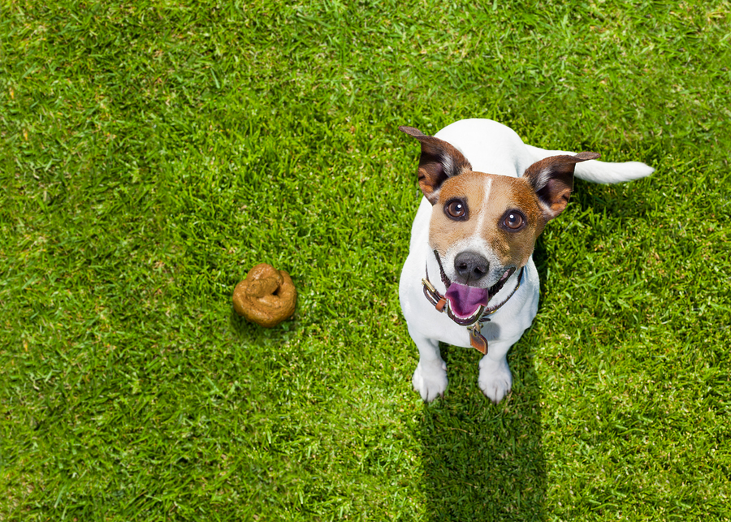

POOP!

Poop is probably your dog's favorite snack.
Dogs do not discriminate whether it's cat poop or dog poop, we can't even tell!
There are no secret ingredients to this filthy snack, only steps.
These are the steps:
- Put leash on dog
- Take dog on a walk
- Let dog walk and do their thing
- Dog will find poop to eat either on grass on sidewalk
- Dog quickly chews and eats poop and very proud